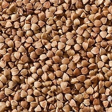
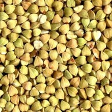

Характеристики продукта
Цвет:
- кремовый с желтоватым оттенком
- коричневый разных оттенков (быстроразваривающая ядрица)
Запах:
свойственный гречневой крупе, без посторонних запахов
Вкус:
свойственный гречневой крупе, без посторонних привкусов
Массовая доля влаги,
% не более:
- для текущего потребления 14,0
- для длительного хранения и досрочного завоза 13,0
Доброкачественное ядро,
% не менее: 99,35
- расколотые ядра крупы, не более 2,0
- зерна пшеницы целые и раздробленные, не более 0,4
Сорная примесь,
% не более: 0,3
- минеральная, не более 0,05
- органическая, не более -
Нешелушенные зерна,
% не более: 0,15
Мучка,
% не более: 0,1
Испорченные ядра,
% не более: 0,2
Металломагнитная примесь,
мг в 1 кг крупы не более*: 3,0
размером отдельных частиц в наибольшем линейном измерении не более 0,3мм и(или) массой не более 0,4мг
Зараженность и загрязненность вредителями не допускается
Развариваемость крупы*,
мин не более 25
для быстроразваривающейся крупы
показать все характеристики
Описание продукта
Высококачественный продукт, выращенный в экологически чистом регионе страны, Алтайский край. В сочетании с многоэтапной обработкой мы получаем вкусный, полезный и питательный продукт. Гречка считается одним из лучших диетических продуктов.
Гречка содержит меньше углеводов, чем другие крупы. При этом она является ценным диетическим белковым продуктом с высоким содержанием аминокислот. И главное, гречка - богатый источник железа. Гречка содержит большое количество витаминов и микроэлементов. Витамины, содержащиеся в гречке: В1, В2, В6, РР, Р, рутин (вещество, обладающее витаминной активностью). Минеральные вещества, содержащиеся в гречке: кальций, фосфор, йод, соли железа, щавелевая кислота. Гречка - сложный углевод, который долго усваивается организмом, давая длительное время насыщения.
Полное описание
Фотопробы нашего продукта
-

-

-

Крупа — пищевой продукт, состоящий из цельных или дроблёных зёрен различных культур. Крупа вырабатывается преимущественно из крупяных (просо, гречиха, рис, кукуруза), прочих зерновых (ячмень, овёс, пшеница, дагусса, реже рожь) и бобовых (горох, чечевица) культур. К крупе также относятся хлопья (овсяные, кукурузные), вспученные зёрна (рисовые, пшеничные), искусственное саго и другие.
Крупы богаты клетчаткой, белками, витаминами В1, В2, РР, в то же время в них содержится очень мало жиров. Чем меньше стадий обработки прошло зерно, тем оно полезнее, так как в его оболочках содержится большинство минеральных веществ и витаминов. Шлифованное и полированное зерно менее полезно, но оно быстрее готовится.
Крупы бывают целыми, дроблеными и спрессованными (в виде хлопьев). Крупы, изготовленные их цельного зерна, называют ядрицей. Такое зерно проходит тщательный отбор, ядрицей могут быть только крупные и целые зерна. Если в пачке с крупой, которая называется ядрицей, присутствует крупяная «мука», дробленые зерна, оболочки и примеси, то эта крупа низкого качества. Из ядрицы готовят рассыпчатые каши и гарниры.
Дроблёная крупа называется сечка. Дробленую крупу полностью или частично освобождают от оболочек и дробят. Дробленая крупа бывает более мелкой или крупной, она быстро готовится и усваивается лучше, чем ядрица. Дробленая крупа больше всего подходит для приготовления молочных каш.
В результате специальной паровой обработки и спрессовывания получают крупу в виде хлопьев. Самые популярные хлопья – овсяные, но в последнее время появились пшенные, рисовые, гречневые и многие другие хлопья. Они быстро готовятся и легко усваиваются. Подходят для приготовления молочных каш и десертов.
{kind=link}